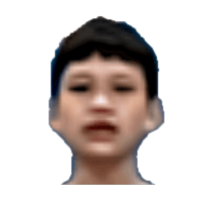
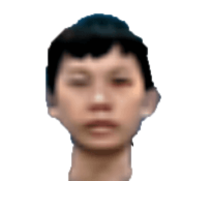
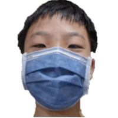
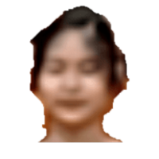

| 座號 | 照片(圖片僅供參考) | 簡介 |
| 1 |  |
他是我們班最安靜,卻又是最聰明的數資生。他喜歡的科目是國文和歷史,而他也很喜歡解數學題目。他個性溫和,基本上很少生氣過。 |
| 2 |  |
他是我們班最常投，入一件事的人,雖然這很不錯,不過他一但太專注某些事就會忽略其他事物。但他同時也是位開心果。 |
| 3 |  |
他也是我們班男生裡安靜的人,他很喜歡去找一號說話、聊天,兩人是很要好的朋友。三號的個性也很溫和、謙虛。他最喜歡數學但也有點不喜歡國文。 |
| 4 | 是個活潑且熱心助人的學生，非常樂意擔任老師的 小幫手，都能用積極的態 度去完成。 | |
| 5 | 他是我們班最愛吵鬧的同學,每次的課堂都有他的聲音,讓大家上課很難睡著,這算是優點吧?! |
|
| 6 |  |
普通人一名。 |
| 7 | 一個愛睡覺的人。 |
|
| 8 |  |
普通人一名。 |
| 9 | 他也是我們班成績好的其中之一。 |
|
| 10 | 他是我們班最高的同學,他喜歡打籃球，不過很常忘東忘西的,他的強項科目是自然。 |
|
| 11 |  |
普通人一名，很愛講話，上課愛玩立可帶，常被老師罵。 |
| 12 | 普通人一名。 | |
| 13 | 他是位搞笑的男生,他很喜歡做一些奇怪的事,只是有時候太超過也會被發罰,他時常扮鬼臉或是投[空氣籃球](跳投),這種行為很常把大家搞得大笑,為我們每天帶來不同的歡樂 |
|
| 14 |  |
普通人一名。 |
| 15 |  |
他是個上課安靜、下課卻很吵的同學。上課時,他就乖乖的坐在位置上抄筆記或是做自己的事,下課鐘聲一響,他則是跟其他男生一起[大鬧一場],這或許就是所謂的[一體兩面]吧! |
| 31 | 她是我們班最聰明的女生,她根本是[完美之神],她成績好,游泳也還不錯,美術也很好。但最令人羨慕的是她有一顆善良、溫柔且謙虛的心,大家都很喜歡跟她互動 |
|
| 32 |  |
普通人一名。 |
| 33 |  |
她是我們班最天馬行空的人,她很喜歡畫畫,或是做一些好看的手作品,而且她的個性也是屬於溫和型,她喜歡和同學一起說話及聊天 |
| 34 |  |
她是我們班我覺得最幽默的同學,她有時候莫名其妙就令人感到有趣,而且她的英文成績也不錯。她還有跟數資班的同學一起去參加發明展呢！ |
| 35 | 普通人一名。 | |
| 36 | 普通人一名。 | |
| 37 |  |
她很喜歡讀小說,在她眼裡,小說就是一切,每次下課她都是坐在座位上自己讀小說,更厲害的是她現在會開始寫屬於自己的小說了 |
| 38 |  |
普通人一名。 |
| 39 |  |
她喜歡動漫,沒有動漫、二次元的世界會讓她很難活下去。當有動漫展或是到書局時,絕對少不了周邊跟漫畫書,看的出來她是一位忠實的動漫迷 |
| 40 | 她是我們班上唱歌最好聽的人,她那優美的歌聲總會讓人有餘音繞樑的感覺。除此之外,她也會彈吉他,還記得有一次她彈吉他時,有很多人在圍觀,她根本是現代的[音樂之神] |
|
| 41 | 她是我們班畫畫最可愛的人,上次我們畫昆蟲時,我看到她畫的蜜蜂,瞬間爆發的稱讚她,而她後來也有告訴我怎麼畫出如此可愛的蜜蜂,真的很可愛! |
|
| 42 | 她是我們班游泳最強的同學,任何游泳技術都難不倒她。她的平時成績也很強,常常拿到名列前茅的排名,很是令人羨慕 |